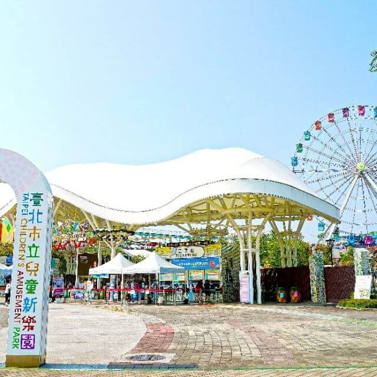

精選景點
-

國立故宮博物院
國立故宮博物院進行數位技術博物館革新已有20年，近年為推廣院內文物、落實文化平權，故宮根據文物史實製作了許多新媒體藝術作品。除了讓文物動起來的高清動畫「古畫動漫」系列作品常設於院內，還有早在2016年就製作完成的繪畫書法VR作品，並不定期使用在院內及院外的教育推廣工作上。
相關連結 : 國立故宮博物院
-

國立中正紀念堂
中正紀念堂擁有環境教育設施場所認證，亦不時舉辦相關園藝課程。特別推薦虎背區南洋杉步道，濃密蔽陰、涼風徐徐，彷彿走進森林小徑，伴隨此起彼落的蟲鳴鳥叫，恣意享受片刻的寧靜。 園區內占地25公頃，包含國家戲劇院、國家音樂廳，充滿多元的藝文展覽、文教活動，以互動科技深入瞭解先總統蔣中正先生事蹟，一窺臺灣近代歷史，還有冬季限定櫻花季可以欣賞，趕快規劃一趟小旅行吧！
相關連結 : 國立中正紀念堂
-
臺北101
臺北的天空因臺北101而有了層次與角度，透過搭乘臺北101的超高速電梯（2004-2015金氏世界紀錄世界最快速電梯），體驗超越移動科技的極限，抵達遠離城市喧囂的89樓，俯瞰360度的臺北全貌，讓來自四面八方的國際遊客驚豔臺灣、體驗寶島。
相關連結 : 臺北101
-

臺北市立兒童新樂園
持悠遊卡即可驗票入園，還能搭乘遊樂設施與部分商店消費，方便遊客一卡在手、漫遊樂園。 不同於一般遊樂園的包裝票價，兒童新樂園採用玩多少付多少的付費方式，還有專屬APP可以提早預約熱門設施，快速通關好便利！園區內不僅有遊樂設施、免費遊戲區還有兒童劇場，假日更有精彩的免費表演。
相關連結 : 臺北市立兒童新樂園